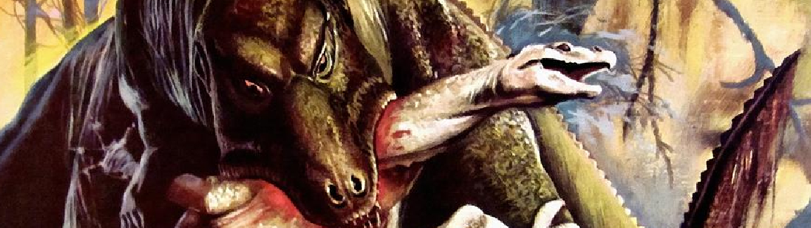
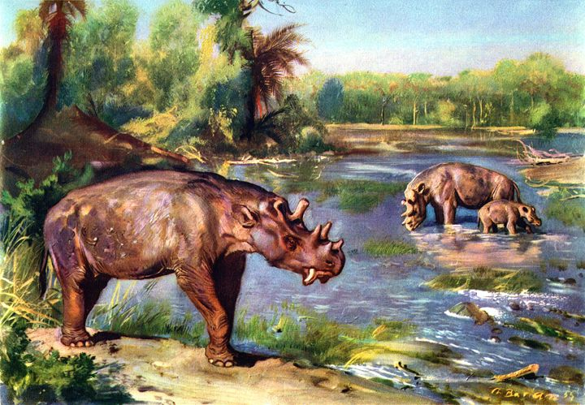
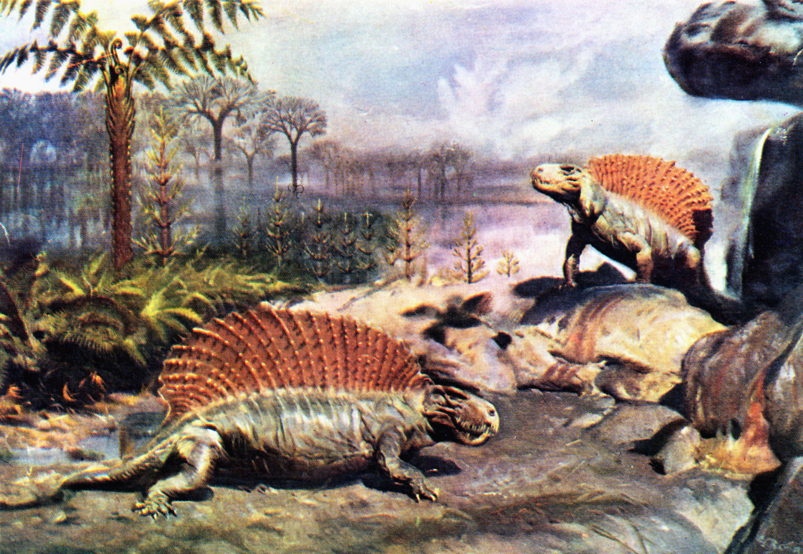
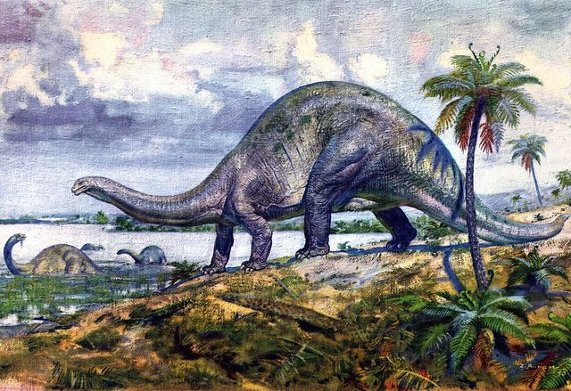

De Monstruos a animales extintos
Tras las descripciones más exactas de los fosiles que se dieron desde 1869 hasta los principios de los años 1920. Los científicos cambiaron su perspectiva de lo que se pensaba hasta ese momento eran seres magicos y dragones y paso a convertirse en seres más parecidos a los reptiles, los cuales eran vistos como seres lentos, de sangre fria y que vivian cerca de zonas volcanicas e incluso en pantanos y en el caso de los grandes mamiferos se pensaba que estos habitaban en las zonas heladas del planeta, los desiertos, estepas e incluso las islas paradisiacas, puesto que los primeros fosiles encontrados estaban bastante incompletos, se tuvo que especular bastante en como caminaban estos seres al igual sobre lo que comian y tambien en donde vivian, por mucho tiempo se pensaba que la tierra no habia cambiado nada o que solo contenian más montañas, junglas y zonas volcanicas.
En este epoca tanto como el arte como la ciencia pensaban en los dinosaurios y mamiferos gigante habian vivido en una misma epoca todos juntos, tambien se pensaba que los primeros humanos tambien habian vivido y sobrevivido junto a estos seres hasta su extinción. Tambien se especulaba mucho sobre como fue la verdadera extinción de estos seres, pues al principio se fueron con la idea más basica y que hasta ese momento se creia correcta la cual era la versión establecida en la biblia, que fue la del gran diluvio, aunque tambien se penso que lo que causo la extinción de estos seres fue que varios volcanes se activaron al mismo tiempo y el magma lo consumio todo.
Esta época se caracterizo también por la rica cantidad de descubrimientos fosiles, puesto que muchas especies de dinosaurios como lo fueron iguanodon, triceratops, espinosaurio, tiranosaurio, brontosaurio. Al igual que algunos mamiferos fueron encontrados como lo fueron Smilodon, brontotherium y al Uintatherium.
  